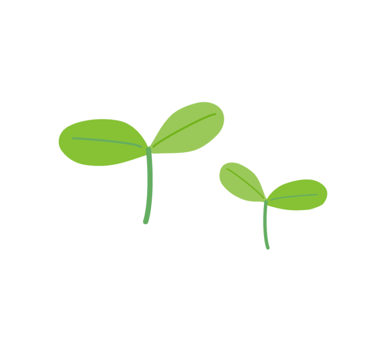
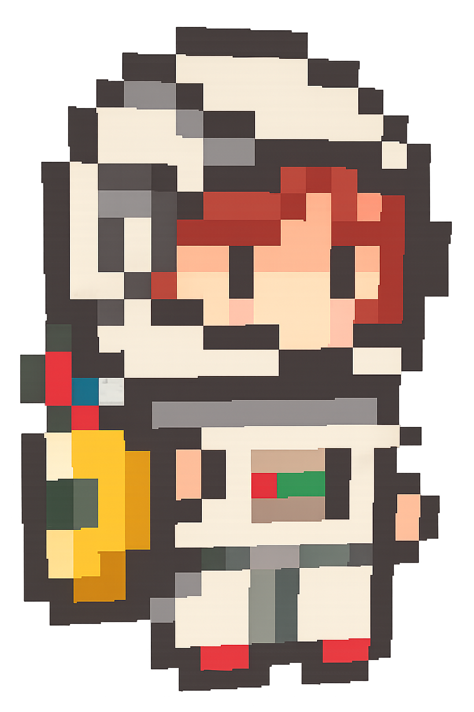
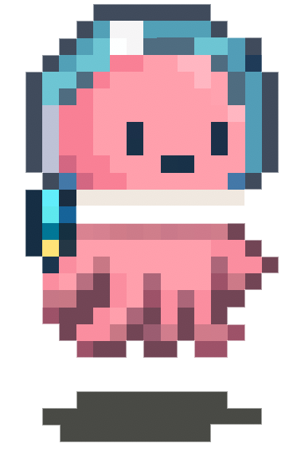
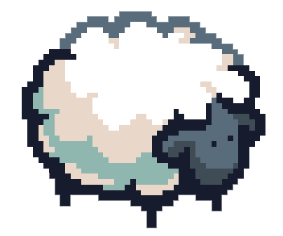

ゲーム開発を通して、遊びの体験を設計する。
こんにちは、宮本幸太郎です。
大原学園熊本情報ITクリエイター専門学校
ゲーム・クリエイター学科でゲーム開発を学んでいます。
Unityを用いた個人制作・チーム制作を経験し、
企画から実装、完成まで取り組んできました。
またYouTubeでは登録者30,000人規模のチャンネルを運営し、
ユーザー視点で物事を考える力を培いました。
視聴者に楽しんでもらうための 構成・編集・分析を行ってきました。
C / C++ / C# を中心に学習し、 ゲーム開発を通して実装経験を積んでいます。
個人制作・チーム制作の両方を経験し、 企画から完成まで取り組んでいます。